Final Presentations, March 13, 2026. Presenters: Susanna (Music & Modernity), Sam (Taiwan's China Problem), Jessy (Korean DMZ: An Accidental Sanctuary).
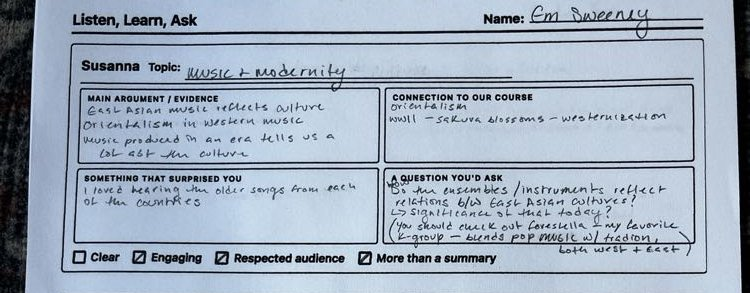
Main Argument: East Asian music is westernized. The musical shift of a country reflects its culture.
Connection to Course: Westernization in different East Asian countries.
Surprised By: I love hearing the songs from each of her countries.
Question: Can you see how lessons/instruments reflect change over time?
Checks: Clear, Engaging, Respected audience, More than a summary
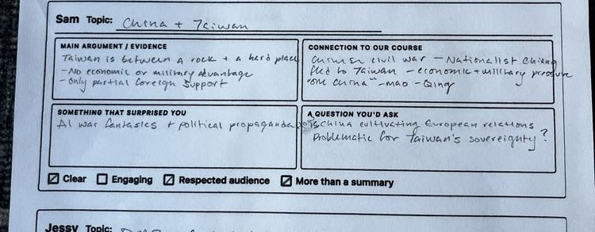
Main Argument: Taiwan is not currently part of the PRC. Only partial recognition/support.
Connection to Course: It is Taiwan's relationship with China — you define China.
Surprised By: All the major cultural connections and political propaganda.
Question: How do Chinese Europeans[?] view sovereignty?
Checks: Clear, Engaging, Respected audience
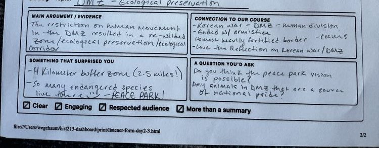
Main Argument: The restrictions on human movement in the DMZ resulted in ecological preservation and biological restoration.
Connection to Course: Korea was divided, caused by arms conflict, resulting in ecological restoration/preservation.
Surprised By: The 4km buffer zone (2.5 miles!). So many endangered species.
Question: Do you think the Peace Park vision is possible? What are the conflicts?
Checks: Clear, Engaging, More than a summary
Em is a consistently strong listener. Her feedback identifies the core argument in each presentation accurately and she generates genuine follow-up questions. Her observation about Susanna's use of audio examples ("I love hearing the songs") shows she's tracking what makes a presentation effective, not just its content. Her question for Jessy about the Peace Park's feasibility shows she's thinking about tensions in the material. Weakest area: the "connection to course" responses are brief — she could push harder on how each topic connects to specific course themes rather than broad labels like "Westernization."
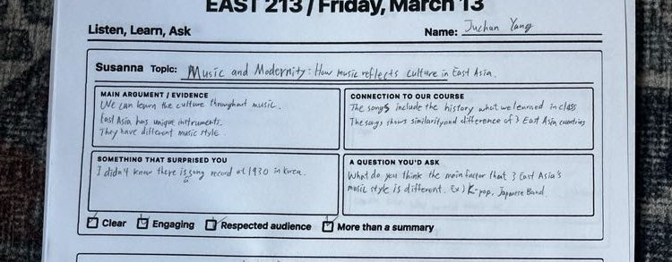
Main Argument: We can see how cultures in East Asia have major differences. They have distinct musical traditions.
Connection to Course: They meet individual differences. What is different about East Asia.
Surprised By: I didn't know about the cello there.
Question: (not legible)
Checks: Clear, Engaging, Respected audience, More than a summary
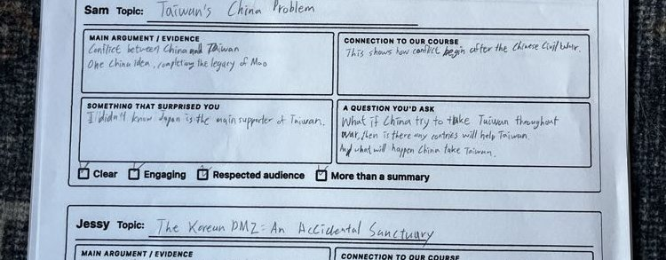
Main Argument: (hard to read — something about China/culture and legacy)
Connection to Course: This shows how it changed after the Chinese culture.
Surprised By: (not legible)
Question: What if China tries to take Taiwan? What options are there? Is there any path for Taiwan's independence?
Checks: Clear, Engaging, Respected audience, More than a summary
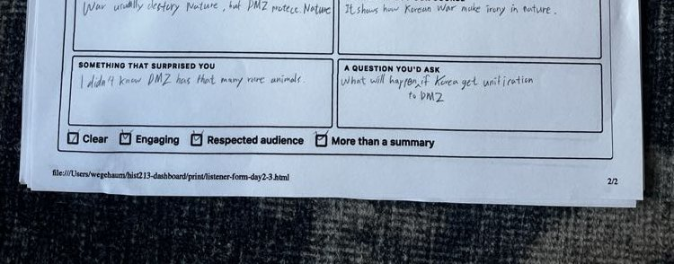
Main Argument: Wildlife and sanctuary in the DMZ.
Connection to Course: It shows how the Korean War made its mark on Korea.
Surprised By: I didn't know the DMZ had this level of ecological significance.
Question: What will happen to the DMZ if Korea achieves unification?
Checks: Clear, Engaging
Juchan's responses are brief but show genuine engagement. His question for Sam ("What if China tries to take Taiwan? What options are there?") demonstrates he's thinking about the stakes of the material, not just absorbing it. His question for Jessy about unification's impact on the DMZ is the key question of that presentation. The main weakness is depth of written response — the main argument and connection sections are quite short and sometimes hard to parse. Pushing for more specific observations about evidence and course connections would strengthen his reviewing.
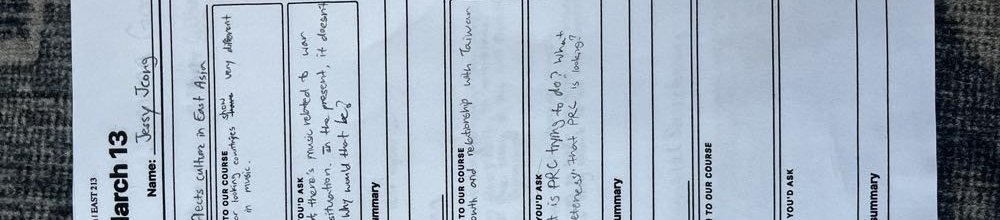
Main Argument: What makes music "Asian." "Asian riff." Musical orientalism. Music past and present: Korea, Japan, China.
Connection to Course: How 3 similar-looking countries show very different aspects, even in music.
Surprised By: Heterophonic as playing music at the same tone. Music tells an era.
Question: In the past there's music related to war or current situations. In the present, it doesn't seem like that. Why would that be?
Checks: Clear, Engaging, Respected audience, More than a summary
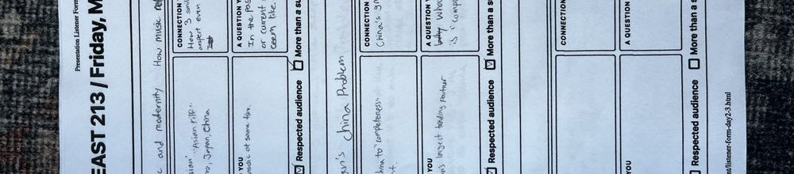
Main Argument: PRC's goal: reunite China to "completeness." Anti-Rightist movement.
Connection to Course: China's growth and relationship with Taiwan.
Surprised By: China is currently Taiwan's largest trading partner.
Question: What is PRC trying to do? What is the "completeness" that PRC is looking for?
Checks: Clear, Engaging, Respected audience, More than a summary
On Jessy (own presentation) — left blank.
Jessy is the strongest reviewer in the batch. Her feedback is specific, well-organized, and shows genuine intellectual curiosity. The question she poses to Susanna ("In the past there's music related to war or current situations. In the present, it doesn't seem like. Why would that be?") is the most thought-provoking question on any form — it's not just a follow-up but a genuine analytical puzzle. Her observation that China is Taiwan's largest trading partner shows she's picking up on specific evidence, not just vibes. She checked all four boxes for both presenters she reviewed, and the written feedback justifies each check. Model peer reviewer.
On Susanna (own presentation) — skipped.
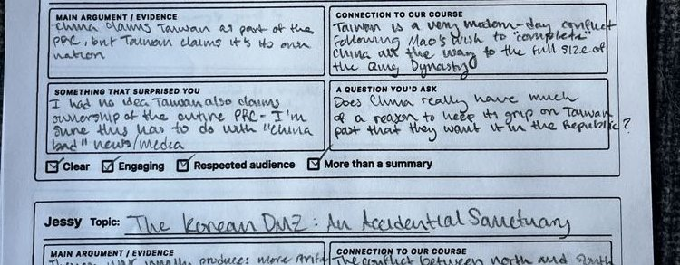
Main Argument: China claims Taiwan as part of the PRC, but Taiwan claims it's its own nation.
Connection to Course: Taiwan is a Mao-era issue, tied to the complete unification of China.
Surprised By: How this ties to the real side of politics. How close the topic is to current events.
Question: Does everyone really agree on Taiwan? What do they want from the remaining situation?
Checks: Clear, Engaging
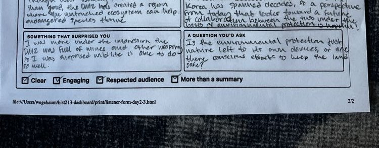
Main Argument: The Korean DMZ promotes more ecological diversity than you'd think. Korea has spent decades creating a region of ecological significance.
Connection to Course: Conflict between North and South Korea spanning decades created a region of ecological significance.
Surprised By: I was surprised by how much information there was about the ecological aspects.
Question: How does this connect to the wider picture? What happens going forward?
Checks: Clear, Engaging, More than a summary
Susanna's feedback shows she's listening for big-picture takeaways. Her surprise about Sam's presentation ("how close the topic is to current events") reveals genuine engagement with the material's relevance. Her question for Sam ("Does everyone really agree on Taiwan?") is good because it probes for dissent rather than accepting the framing. The feedback on Jessy is solid but stays at the surface — "more ecological diversity than you'd think" captures the surprise but doesn't dig into specifics. She could push herself to note specific evidence or arguments rather than general impressions.
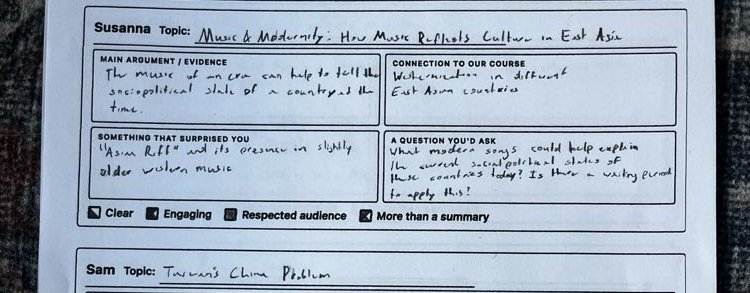
Main Argument: The music of an area can help to tell the cultural shift of a country in a meaningful time.
Connection to Course: Westernization in different East Asian countries.
Surprised By: The riff and its presence in older modern music.
Question: (partially legible — about how music can also help with understanding world/Asia)
Checks: Clear, Respected Audience
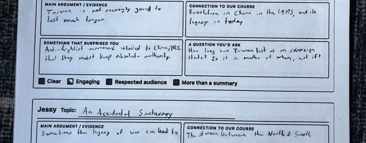
Main Argument: Taiwan is not currently part of China. It may not hold much longer.
Connection to Course: Revolution in China. Legacy in today.
Surprised By: Anti-Rightist movement affected so many people.
Question: How long can Taiwan hold as a state? Is it a matter of when, or if?
Checks: Clear, More than a summary
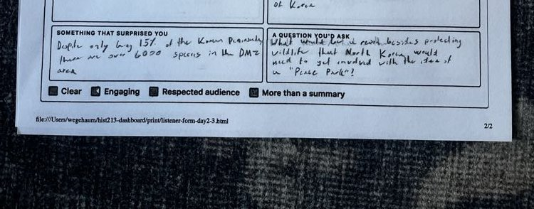
Main Argument: The DMZ is an ecological zone. Briefly only getting at the surface.
Connection to Course: If we can look beyond the Korean Peninsula... North Korea's approach. Peace Park?
Surprised By: Despite only being a narrow strip, the ecological space in the DMZ is remarkable.
Question: How would North Korea approach the Korean Peninsula? The Peace Park idea?
Checks: Clear, Engaging, Respected audience
Eliel's feedback is honest and direct. His question for Sam ("How long can Taiwan hold as a state? Is it a matter of when, or if?") is one of the sharpest on any form — it reframes the presentation's argument into a genuinely urgent question. His note on Jessy ("briefly only getting at the surface") is also candid, suggesting the presentation could have gone deeper. This is useful feedback because it's not just complimentary. Weaker areas: the "connection to course" responses are vague ("Revolution in China. Legacy in today.") and could be more specific about which course themes are relevant.
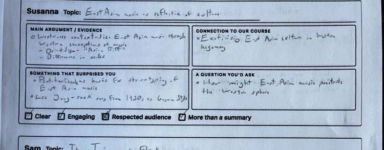
Main Argument: Westerners contextualize East Asian music through Western conceptions of music. Orientalism, "Asian Riff," differences in scales.
Connection to Course: Exoticizing East Asian culture in Western hegemony.
Surprised By: Pentatonic scale as basis for stereotyping of East Asian music. Lee Jung-sook song from 1930 vs. Guqin style.
Question: How might East Asian music penetrate the Western sphere?
Checks: Clear, Engaging, Respected audience, More than a summary
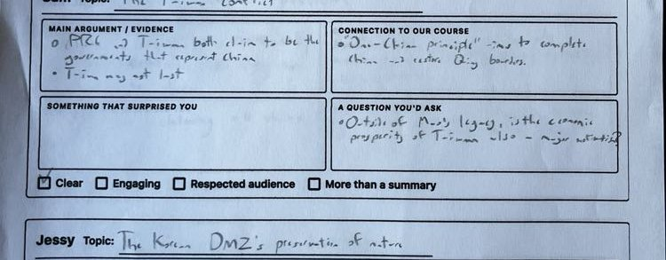
Main Argument: PRC and Taiwan both claim to be the government that represents China. Taiwan may not last.
Connection to Course: "One-China principle" — aim to complete China and restore Qing boundaries.
Surprised By: Outside of Mao's legacy, is the economic prosperity of Taiwan also a major motivation?
Question: Outside of Mao's legacy, is the economic prosperity of Taiwan also a major motivation?
Checks: Clear, Engaging, Respected audience, More than a summary
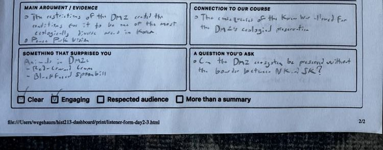
Main Argument: The restrictions of the DMZ created conditions for it to be one of the most ecologically diverse areas in Korea. Peace Park Vision.
Connection to Course: The consequences of the Korean War allowed for the DMZ's ecological preservation.
Surprised By: Animals in DMZ: Red-crowned Crane, Black-faced Spoonbill.
Question: Can the DMZ ecosystem be preserved without the border between NK and SK?
Checks: Clear, Engaging
Isabelle is the most academically precise reviewer. Her vocabulary ("exoticizing," "Western hegemony," "Orientalism") shows she's processing the presentations through course concepts, not just summarizing. Her course connection for Sam (linking the One-China principle to Qing-era boundaries) is the best on any form — it connects the contemporary political issue to a specific historical framework from the course. Her note of specific species (Red-crowned Crane, Black-faced Spoonbill) shows she's tracking concrete evidence. The question for Jessy ("Can the DMZ ecosystem be preserved without the border?") is elegant because it surfaces the central paradox. One minor note: her "surprised" and "question" for Sam are identical, suggesting she could differentiate between what surprised her and what she'd ask.
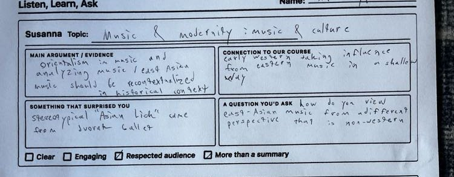
Main Argument: Orientalizing music and analyzing music. East Asian music should be recontextualized in historical context.
Connection to Course: Early Western taking/influence from Eastern music in a shallow way.
Surprised By: Stereotypical "Asian Lick" came from a Dvorak ballet.
Question: How do you view East Asian music from a different perspective that is non-Western?
Checks: Engaging, More than a summary
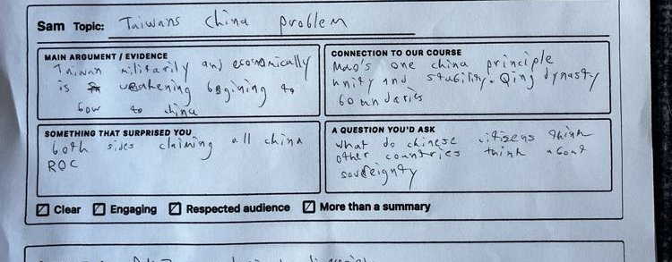
Main Argument: Taiwan militarily and economically is weakening, beginning to face up to China.
Connection to Course: Mao's One China principle. Unity and stability. Qing dynasty boundaries.
Surprised By: Both sides claiming all of China. ROC.
Question: What do Chinese citizens think? What do other countries think about sovereignty?
Checks: Clear, Engaging, More than a summary
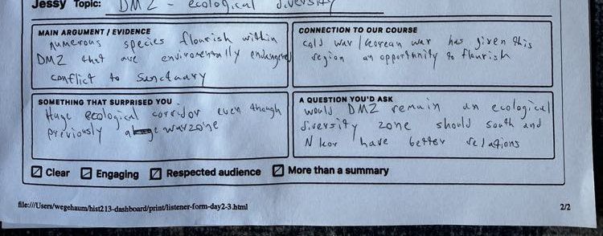
Main Argument: Numerous species flourish within the DMZ that are environmentally endangered. Conflict to Sanctuary.
Connection to Course: Cold War / Korean War has given this region an opportunity to flourish.
Surprised By: Huge ecological corridor even though it was previously an active warzone.
Question: Would the DMZ remain an ecological diversity zone if South and North Korea have better relations?
Checks: Clear, Engaging, Respected audience, More than a summary
Nik's feedback is balanced and thorough across all three presentations. He identifies specific evidence (Dvorak ballet, ROC claiming all of China, specific species) rather than staying general. His course connections are strong, especially linking Sam's presentation to the Qing dynasty boundaries and the One-China principle. His question for Sam ("What do Chinese citizens think?") pushes beyond the geopolitical framing to consider ordinary people — a move consistent with the course's emphasis on how policy affects lives. He checked the most boxes for Jessy (all four), suggesting he found that presentation the most complete. Solid, consistent reviewer.
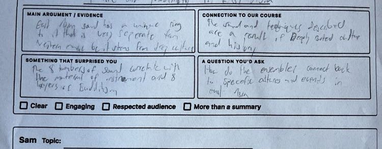
Main Argument: East Asian sound has a unique quality that is very separate from Western music, yet borrows from Japanese culture. The 8 kinds of sound correlate with instruments and layers of Buddhism.
Connection to Course: The sounds and techniques described are a result of deeply rooted culture and history.
Surprised By: The 8 kinds of sound correlate with the material of instruments and 8 layers of Buddhism.
Question: How do the examples connect back to specific cultures and events in East Asia?
Checks: (none checked)
Left blank.
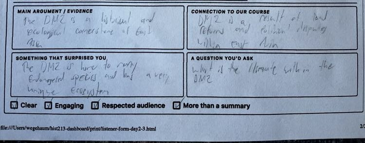
Main Argument: The DMZ is a historical and ecological cornerstone of East Asia.
Connection to Course: DMZ is a result of land reform and political disputes within East Asia.
Surprised By: The DMZ is home to many endangered species and has a very unique ecosystem.
Question: What is the ultimate future within the DMZ?
Checks: Clear, Engaging, Respected audience, More than a summary
Cole's feedback is mixed. The Susanna section shows genuine engagement — the observation about 8 kinds of sound correlating with Buddhist layers is specific and interesting, suggesting deep listening. However, leaving Sam's section entirely blank and checking none of the boxes for Susanna are notable gaps. The Jessy section is competent but general ("historical and ecological cornerstone"). Cole's strongest contribution is the question for Susanna ("How do the examples connect back to specific cultures and events in East Asia?"), which identifies a real analytical gap. Completing all sections and being more specific in course connections would improve the reviewing quality.